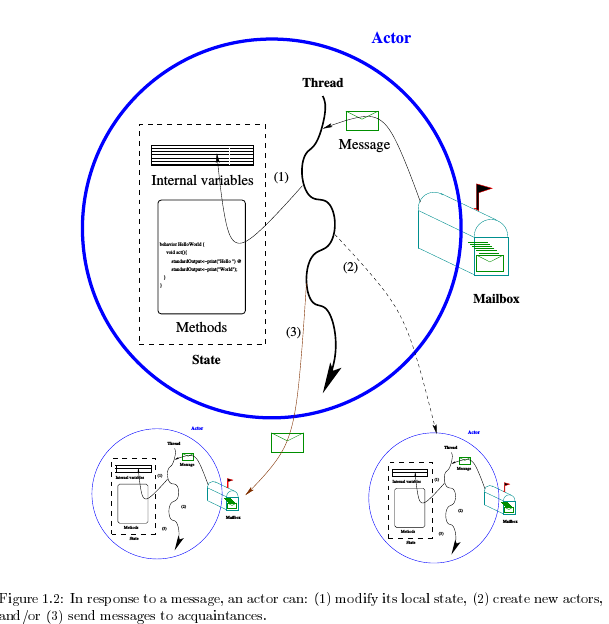

Actors
Table of Contents
1 Actors Overview
- Actors were introduced by Carl Hewitt (MIT) and co-researchers in the 1970s.
- Actors are now part of many programming languages: C++/Act++, Java, Erlang, Scala, Scheme, Clojure, Io, Ruby; in Reia, all objects are actors.
- The semantics of "actors" in these PL are not the same.
- By "standard" model we are referring to the description given by Hewitt and his co-researchers.
1.1 Actors Overview - By Carl Hewitt
- An Actor is a computational entity that, in response to a message
it receives, can:
- send messages to addresses of Actors that it has;
- create new Actors;
- designate how to handle the next message it receives.
- There is no assumed order to the above actions and they could be carried out concurrently. In addition, two messages sent concurrently can be received in either order.
- from Parallelism and Concurrency in the Actor Model
2 Actor Standard Model
- [from Varela's PhD 2001] 
2.1 Actor Standard Model-1: Structure
- Think of actors as [tiny] independent processes/threads. May be:
think of an actor as a person. (Disassociate "thread" with Java or
Linux threads.)
- Every actor is assigned a unique name/ address. [Similar to pid, but abstract.]
- An actor knows the names of some of the actors.
- An actor does not contain other actors.
- Each actor has its own (local/private) state.
- Its own address space.
- Includes a pool (queue? bag?) of messages: mailbox.
- There is no shared memory/state among actors.
- No global clock.
2.2 Actor Standard Model-2: Mailbox
- Idealized mailbox. Can be empty. Never becomes "full". Do not think: Unix-like mailboxes.
actorName ! msgSender never blocks. No handshake. (Overloading of CSP notation.)- Sent messages are never lost.
- Received messages are "processed", one at a time. The processed msg is no longer in the mailbox.
- When the mailbox is empty, the actor is idle.
- Messages may not arrive in the order sent. Even though A sent to B, m1 first, and m2 second, B may receive m2 first, and m1 second.
- Spurious messages do not happen.
2.3 Actor Standard Model-3: Computation
- Reactive: Actor computation is performed as a reaction to messages. Other than initialization.
- Single thread. An individual actor is sequential. A collection of actors is concurrent.
- Each actor has its own methods. Once-only assignment; recursion; if-exp; no loops;
- An actor can create others. It can retain the name/address of the newly created actor.
- After a msg is processed, the actor A can become a different actor B.
- The messages remaining will be processed by B.
2.4 Actor Standard Model-4: Processing a Message
- Send asynchronous messages. [Send is never blocking.]
- Restricted to actors whose addresses it has.
- Can send the address as (part of) a message.
- Can send messages to self.
- Sender and receiver can agree on the structure of content. (I.e., marshalling is implicit.)
2.5 Actor Standard Model-5: A Tiny Example
- We will use a quickly-made-up language to illustrate.
- Do not imagine an obvious implementation in C++, Java or Scala. Implementation techniques of actors are now so advanced that Akka claims to be able to create millions of actors in a second.
2.6 Actor Standard Model-5: An Integer Variable
Let us build an actor that behaves like a "var" of type integer.
intvar: actor(z: integer) { val myx = z receive msg { case msg.op = set(x): // do nothing case msg.op = get() : msg.sender ! myx } } var a: actor = create intvar(5)- Repeated assignments are not permissible. Use
become
2.7 Actor Standard Model-5: An Integer Variable, contd
Repeated assignments are not permissible. Use
becomeintvar: actor(z: integer) { val myx = z receive msg { case msg.op = set(x): become create intvar(x) case msg.op = get() : msg.sender ! myx } } var a = create intvar(5) var i = a ! get() // i = 5 a ! set(34) // does not return any value var j = a ! get() // j = 34- Even after a
become, the actorais still available as a target for send. - The actor
aknows of no other actors. We can mod the above to collectmsg.senderas it receives messages.
3 Actor Standard Model - More Details
3.1 Actors' Names
- Each actor is given a unique immutable name ["address"].
- This name cannot be computed/guessed.
- An actor can have the name of another at build time.
- An actor can store the names of actors that it creates, or receives.
- A name may be sent as part of a msg.
3.2 Encapsulation
- Encapsulation as used in OOP.
- An actor has no mechanism to share its state with other actors [other than messaging]
- An actor cannot access, in its own run-time stack, the internal state of another actor.
- The state of an actor is changeable only through the actors own actions.
- Safe Messaging: Messages should have call-by-value semantics. After delivery, the message is only in the address space of the receiver-actor.
3.3 Fair Scheduling
- Weak fairness. Recall its def in temporal logic.
- Every actor is eventually scheduled to do its computation.
- So, even in the presence of actors running an "infinite loop" or blocked on an I/O or system call, other actors are not starved.
- Every message sent is eventually delivered to its intended mailbox (unless its actor is permanently "disabled").
- These requirements may make the implementation expensive.
3.4 Location Transparency
- An actor's address is not based on its location.
- The actors an actor knows could be on the same core, on the same CPU, or on a different node in a network.
- A consequence of location transparency is state encapsulation.
- Location transparent naming facilitates migration of actors to different nodes.
3.5 Mobility
- Mobility: A computation can move across different nodes.
- Strong mobility = Movement of both code and execution state.
- Weak mobility = Movement of code only.
- Transparent Migration.
- Migration enables load-balancing and fault-tolerance.
3.6 Become
- Behavior is replaced after one msg is processed.
- Essentially another actor's behavior substitutes.
- Adress remains the same.
- No
become=> the behavior remains as-was.
4 Examples of Actor Programs
4.1 Set
- In CSP, we did a small set of integers. Not only "small" but statically fixed sized set. Why? Because all processes need to be defined at "compile"-time.
- We can build an actor system for a finite, but arbitrarily large, set of integers.
- Outline: Messages handled:
has(x),insert(x). Nodelete(x). Each actor holds one integer. Actors form conceptually a linked list. Initially, construct the receptionist actor empty handed. Oninsert(x)thisbecomes one holdingx. Inserts a new empty handed actor as next. - Details. Your Exercise! (See the next example.)
4.2 A Stack
- Build a system of actors that behaves as a stack of integers. From
an external entity, the "lead" actor receives request-to-do
messages:
push(x), pop, top, isEmpty. Reply to the last three requests. Assume valid requests. - Architecture: Each actor holds one element of the stack. It also has a reference to the next actor of the stack. If this ref is NIL, this is the last actor of the stack.
4.3 A Stack, contd-1
We show only push and pop implemented.
stknd: actor(elm: actor, lnk: actor) { receive msg { case msg.op = pop(): if (elm != NIL) { become lnk msg.sender ! elm } case msg.op = push(X): P = create stknd(elm,lnk) Q = create itemvar(X) become create stknd(Q, P) } }
4.4 A Stack, contd-2
- The top of the stack is the receptionist in this actor system.
- It was the only actor of the system created externally. It is created with a NIL elm, and NIL lnk.
A pop operation changes the stack as follows:
--------- --------- --------- --->| 3 | --|--->| 4 | --|--->| NIL|NIL| --------- --------- ---------
become s
---------- ------- ---------
--->|forwarder|--->| 4 | --|--->| NIL | NIL|
---------- ------- ---------
4.5 A Stack, contd-3
- Discussion: A stack is not a "good match" for distributed computing – any model. If concurrent processes push and pop from the same stack, there are no guarantees about the order of content received back from pops.
4.6 A Recursive Factorial
factorial: actor() {
receive msg {
case msg.op = fac(n, a):
if (n = 0) a ! nat(1)
else {
F = create aux(n, a)
self ! fac(n - 1, F)
} } }
aux: actor(n: nat, r: actor) {
receive msg {
case msg.op = nat(k): r ! n * k
} }
5 Actor Systems
- A finite set of actors and a finite set of pending messages.
- Receptionists: Actors that may receive messages from (external) actors.
- External Actors that may be sent (output) messages.
- An external actor simply holds all communications sent to it until the system is composed with another that contains the actor in question.
- External actors must respond to a communication telling it to forward all its mail to the connected actor.
6 Discussion
- A collection of classic processes with no shared variables whatsoever can be considered to be based on actor model. The conversion to standard actor model is non-trivial only because we must eliminate loops and var-assignments.
- Topology. Who can send to who? Dynamic in Actors. Fixed in CSP.
- "Channels" specify the type of messages that can be accepted. The mailbox of an actor is a channel that accepts any type of message. Messages that are not matched by any of the case clauses will remain in the mailbox, rather than causing an error.
6.1 Actors Long Term Objective
- "The Actor Model is intended to provide a foundation for
inconsistency robust information integration."
- We should expect large scale gathering of info to be inconsistent.
- Robustness in the presence of inconsistency.
- "Persistence. Information is collected and indexed."
- "Concurrency: Work proceeds interactively and concurrently, overlapping in time."
- "Quasi-commutativity: Information can be used regardless of whether it initiates new work or become relevant to ongoing work."
- "Sponsorship: Sponsors provide resources for computation, i.e., processing, storage, and communications."
- "Pluralism: Information is heterogeneous, overlapping and often inconsistent. There is no central arbiter of truth."
- "Provenance: The provenance of information is carefully tracked and recorded."
– Carl Hewitt
7 Implementations
| SALSA | Scala | Kilim | AArch | JavAct | Foundry | JetL | |
| State Encap | Yes | No | No | Yes | Yes | Yes | Yes |
| Safe Message | Yes | No | No | Yes | No | Yes | No |
| Fair Sched | Yes | Yes | No | Yes | No | Yes | No |
| Loc Transpar | Yes | No | No | Yes | Yes | Yes | Yes |
| Mobility | Yes | No | No | Yes | Yes | Yes | No |
| version# | 1.1.2 | 2.7.3 | 0.6 | 0.1.3 | 1.5.3 | 1.0 | 0.1.7 |
as of 2009
7.1 Encapsulation Violation
A program written in the Scala Actors (!= Akka Actors) shows violation of state encapsulation which may cause two actors to simultaneously execute the critical section.
object semaphorenotok {
class SemaphoreActor() extends Actor {
...
def enter() {
if (num < MAX) {
// critical section
num = num + 1
} }
}
def main(args: Array[String]): Unit = {
var gate = new SemaphoreActor()
gate.start
gate ! "enter"
gate.enter
}
}
7.2 Starvation
A program written in the Scala Actors showing an Actor "busy-waiting" for a reply. In the absence of fair scheduling, such an actor can potentially starve other actors. [Figure 3 ref1]
object fairness {
class FairActor() extends Actor {
...
def act() { loop { react {
case (v : int) => {
data = v }
case ("wait") => {
// busy-waiting section
if (data > 0) println(data)
else self ! "wait" }
case ("start") => {
calc ! ("add", 4, 5)
self ! "wait" }}}
}}}
8 References
- Carl Hewitt, "Actor Model of Computation: Scalable Robust Information Systems," 2013. A very deep conceptual paper. http://carlhewitt.info. Highly Recommended Reading
- Rajesh K. Karmani, Gul Agha, "Actors." In Encyclopedia of Parallel Computing, pp. 1-11. Springer US, 2011. Web search for its pdf. Required Reading
- http://en.wikipedia.org/wiki/Actor_model Recommended Reading